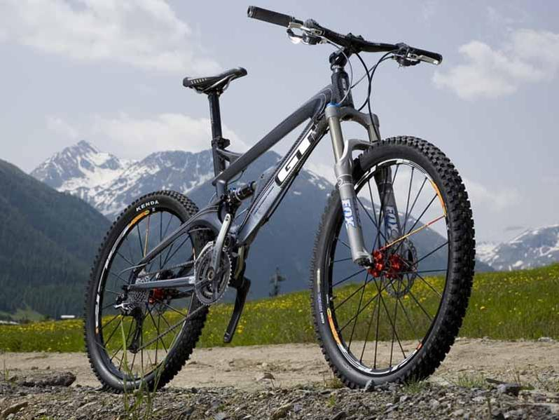
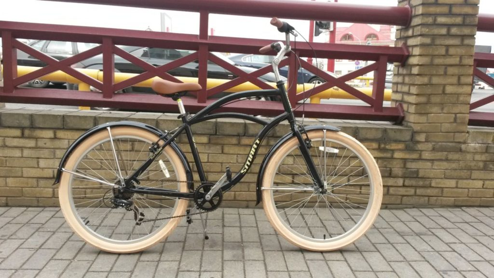
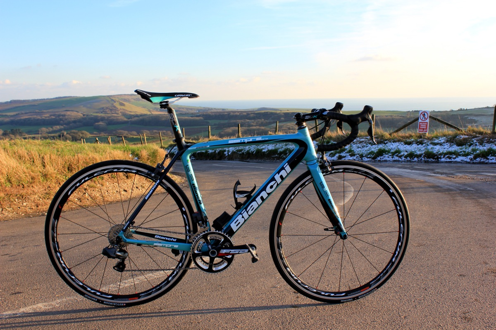
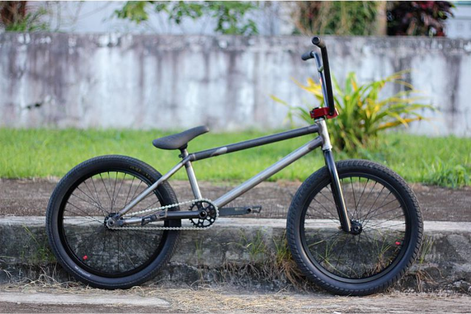

Не знаешь про что писать,
пиши про Велики
Тебе все равно, а Жеке притно))
Типы велосипедов
Несмотря на многообразие велосипедов на сегодняшний день существует 4 основных типа велосипедов: горные, городские, шоссейные и специальные (триальные, детские, курьерские …). Все остальные велосипеды представляют собой “гибридные” сочетания этих четырех типов. В этой статье кратко рассмотрены их общие черты, отличия и преимущества. После ознакомления с данной информацией, подобрать наиболее подходящий для вас велосипед будет гораздо проще.
Горные велосипеды
1. Горные велосипеды. Начнем с самого популярного и распространенного типа велосипедов – горные велосипеды (другое название — маунтинбайки, англ. mountainbike, MTB). Само название типа говорит о его назначении – велосипеды предназначены для езды по дорогам невысокого качества (или вне дорог), по местности с сильно пересеченным рельефом (название не исключает возможность ездить по городским ровным дорогам).
Горный велосипед имеет высокий дорожный просвет за счет отсутствия провисания каретки, что позволяет при катании не цепляться педалями за землю. У горных велосипедов кареточный узел расположен на одной линии с передней и задней втулкой, в то время, как в обычных моделях каретка расположена ниже линии. Другой особенностью является растянутая база и прямой и короткий руль. Не очень удобен для скоростной езды, но удобен для маневренной езды на небольшой скорости.
Подразделяется на:
- двухподвес (full-suspension) (передний и задний амортизаторы),
- хардтейл (hardtail) (амортизатор на передней вилке, к примеру вот эта модель Head Troy II ),
- гибридные (передний амортизатор как у хардтейла, но более короткая и комфортная рама),
- фристайл,
- дерт.
Двухподвесы в свою очередь делятся на:
- даунхилл (downhill, DH),
- фрирайд (FreeRider),
- бэккантри (backcountry).
Городские велосипеды
Городские велосипеды (citybike, дорожный велосипед). Велосипеды предназначены для ежедневных поездок по городу (в том числе и в пробках) и неспешных прогулок по ровным дорогам. К таким велосипедам по праву относится модель Santana 2
Основным отличием таких велосипедов является: закрытая или открытая рама, большие колеса с шинами средней ширины и мелким протектором. Довольно часто установлены несъемные щитки на колесах, багажник и защита цепи. Также устанавливают дополнительные детали такие как – подножка, зеркала, корзина и прочее.
Конструкция такого велосипеда довольна проста и больше предназначена для города, она направлена на комфорт и практичность, а не на скорость и эффективность. Ситибайки оборудованы высоким рулём, который регулируется и большим мягким седлом, поэтому человек сидит на велосипеде прямо, как на стуле (высокая посадка). Для городских велосипедов характерно меньшее количество скоростей количество скоростей, чем на спортивных или туристических моделях.
Шоссейные велосипеды
Шоссейные велосипеды (дорожные, road bikes). Узкоспециализированный тип велосипедов, прочно завязанный на фитнесе, спорте и длительных путешествиях. Это и классические шоссейные гонки, и велокросс, и триатлон. К этому типу также относятся популярные гибридные и туристические велосипеды.
Каждая спортивная дисциплина предъявляет свои требования к конструкции велосипеда, однако между всеми моделями прослеживается явное сходство: легкие рамы с тонкими трубами, накатистые 28″ дюймовые колеса, спортивные седла и большое количество передач, а также изогнутый руль, напоминающий бараньи рога. На хорошем, ровном покрытии на таком велосипеде можно разгоняться до 70 км/час.
Специальные велосипеды. Название типа также говорит само за себя, в эту категорию входят детские и подростковые велосипеды, BMX расшифровывается как Bicycle Moto Cross (велосипедный мотокросс), складные велосипеды, круизеры, электровелосипеды и т.д.
Кроме перечисленных выше, существуют и другие типы велосипедов. Например, тандемы (велосипеды на двух человек) не являются такой уж редкостью за границей, но в нашей стране довольно редки. Тандемы можно тоже делить на горные, шоссейные и т. д. по используемым комплектующим и назначению.
Существуют велосипеды не с традиционной вертикальной посадкой, а с лежачей на сиденье типа кресла. Этот тип велосипедов называют лигерад или рикамбент (recumbent bike). Фактически это нечто среднее между велосипедом и веломобилем. Единственное, что позволяет отнести его к велосипедам, а не веломобилям, это наличие лишь двух колес и необходимости держать равновесие.